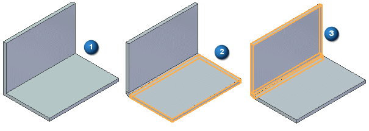
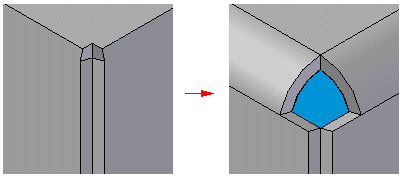

Thin Part to Synchronous Sheet Metal command
Use the Thin Part to Synchronous Sheet Metal command  to transform an ordered or synchronous part consisting of a uniform thickness (1)
into a synchronous sheet metal model consisting of native tabs (2) and flanges (3).
to transform an ordered or synchronous part consisting of a uniform thickness (1)
into a synchronous sheet metal model consisting of native tabs (2) and flanges (3).

The transformed body contains sheet metal model attributes as if it were created using sheet metal features. Once transformed, you can add sheet metal features to the body, such as jogs, dimples, and so forth. You can also edit the thickness, bend radius or flatten the model, just as you can with any native sheet metal file.
You can use the command to rip edges in models that contain fused corners. If you try to transform a part that contains fused corners, upon transformation of the face selection, you must split an edge or curve. To complete the part transformation, click the Rip Step button on the command bar, and then click the edges or curves to split.

How do I
Convert a part to sheet metalOverride the corner treatment
Override the bend values
Transform a document to a synchronous sheet metal part
Transform a sheet metal part
Rip a corner of a sheet metal part
Learn more
Converting part documents to sheet metalLook up more details
Part to Sheet Metal commandPart to Sheet Metal Options dialog box
Thin Part to Synchronous Sheet Metal command bar
Thin Part to Sheet Metal command
Thin Part to Sheet Metal command bar
Thin Part to Sheet Metal Options dialog box
Rip Corner command
Rip Corner command bar